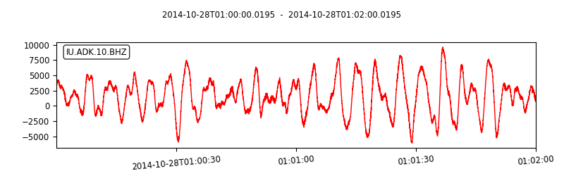
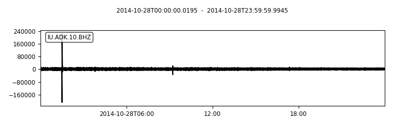
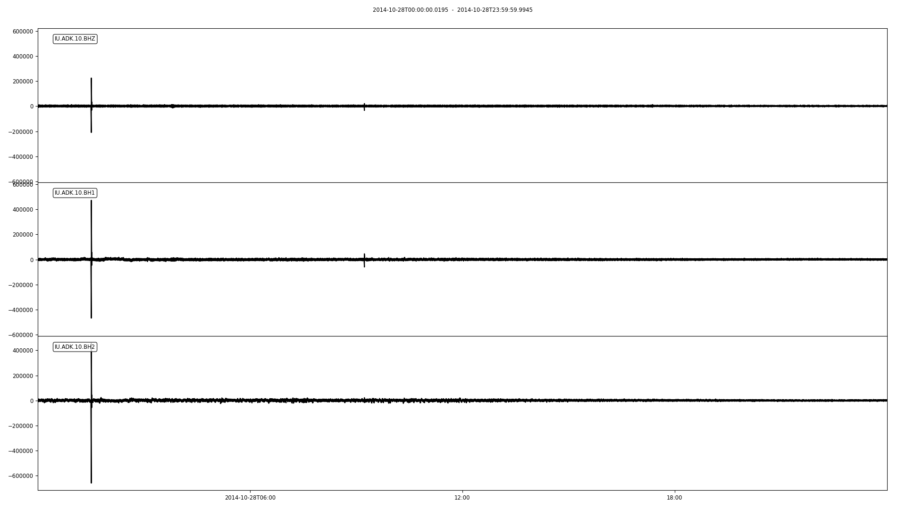
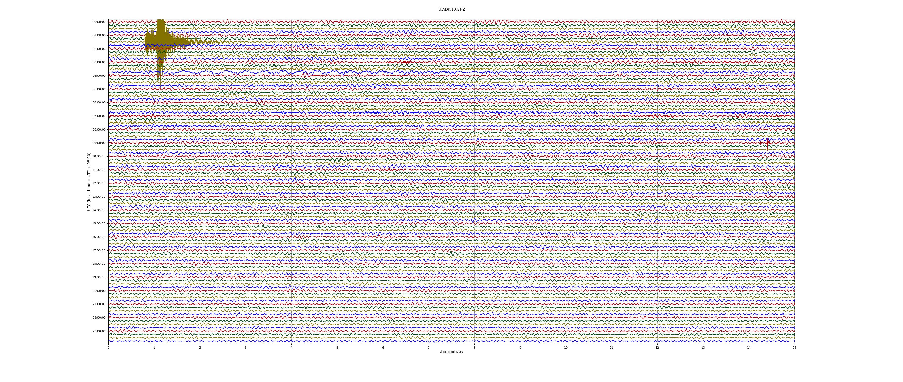
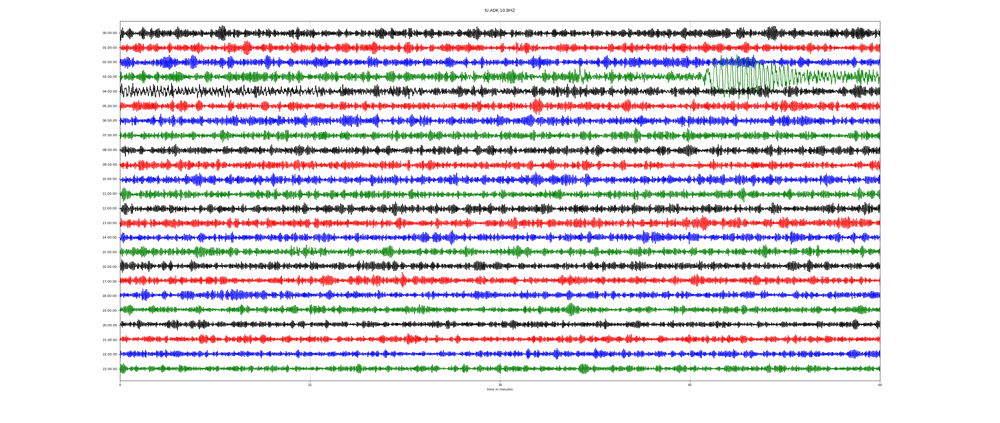
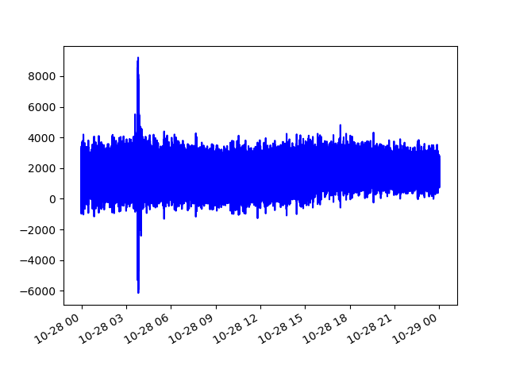

从零开始的Obspy
读取地震数据
访问元信息
from obspy import read
waves = read('/home/zhiyuanshi/Documents/Pythonworks/IU_ADK_10.mseed')
print(waves) # 输出波形名称
输出：
1 | IU.ADK.10.BH1 | 2014-10-28T00:00:00.019500Z - 2014-10-28T23:59:59.994500Z | 40.0 Hz, 3456000 samples |
print(len(waves)) # waves中含有15个波形
1 | 15 |
输出最前面的波形名称
tra1 = waves[0]
print(tra1) # 输出最前面的波形名称
1 | IU.ADK.10.BH1 | 2014-10-28T00:00:00.019500Z - 2014-10-28T23:59:59.994500Z | 40.0 Hz, 3456000 samples |
输出元信息，即地震数据的台站信息等:
print(tra1.stats) # 输出元信息，即地震数据的台站信息等
1 | network: IU |
print(tra1.stats.station)
1 | ADK |
访问波形数据
使用data关键词对实际波形数据进行检索
print(tra1.data)
1 | [-4017 -3853 -3594 ... 1167 807 1231] |
print(len(tra1.data))
1 | 3456000 # 与上面的波形中npts相对应 |
tra1.plot() # 浏览数据
波形绘制
读取数据
from obspy.core import read
# 读取一个数据
signalchannel = read('/home/zhiyuanshi/Documents/Pythonworks/IU_ADK_10_B03.sac')
# 读取三个数据
threechannels = read('/home/zhiyuanshi/Documents/Pythonworks/IU_ADK_10_B01.sac')
threechannels += read('/home/zhiyuanshi/Documents/Pythonworks/IU_ADK_10_B02.sac')
threechannels += read('/home/zhiyuanshi/Documents/Pythonworks/IU_ADK_10_B03.sac')
print(signalchannel)
1 | 1 Trace(s) in Stream: |
print("\n")
print(threechannels)
1 | 3 Trace(s) in Stream: |
基本绘制与保存
signalchannel.plot() # 基本绘制，默认大小800*250，可以通过size属性调整.
size属性使用方法：size=(1920,1080)
signalsstarttime = signalchannel[0].stats.starttime
signalchannel.plot(outfile='signalchannelred.png', color='red', number_of_ticks=7, tick_rotation=5, tick_format='%I:%M %p',starttime = signalsstarttime+60*60, endtime=signalsstarttime+60*60+120)
signalchannel.plot(outfile='signalchannel.png') # 保存波形文件


绘制多通道波形
threechannels.plot(outfile='threechannels1920_1080.png', size=(1920,1080))

绘制一天的trace图像，one-day图像
signalchannel.plot(outfile='signalchannel_oneday.png', size = (3400,1440), type='dayplot')

signalchannel.filter('lowpass', freq=0.1, corners=2)
signalchannel.plot(outfile='signalchannel_oneday_filter',
type='dayplot', interval=60, right_vertical_labels=False,
vertical_scaling_range=5e3, one_tick_per_line=True,
color=['k', 'r', 'b', 'g'], show_y_UTC_label=False,
events={'min_magnitude': 6.5}, size=(3400, 1440))

绘制一段记录 (未完成，需要定义单位或者地理位置)
threechannels.plot(outfile='section_threechannels', type='section')
使用matplotlib自定义绘图
- 疑问：signalchannel 需要取read到的内容的[0]项，具体未知为何如此。
1
2
3
4
5
6
7import matplotlib.pyplot as plt
fig = plt.figure() # 创建一个画布
ax = fig.add_subplot(1, 1, 1) # 创建组合图，如subplot()
ax.plot(signalchannel[0].times("matplotlib"), signalchannel[0].data, 'b-')
ax.xaxis_date()
fig.autofmt_xdate()
plt.show()